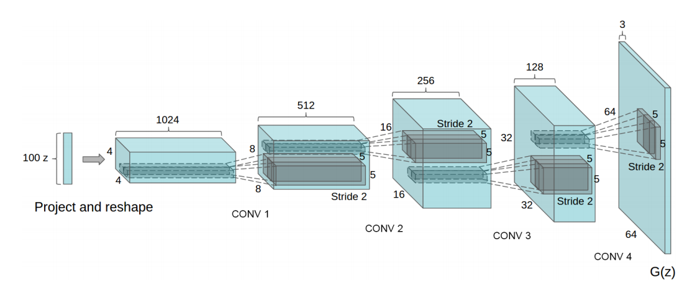

1) Introduction
Generative Adversarial Networks (GANs) are machine learning models that solve the problem of generating new data from the probability space of the training data instead of simply classification and regression. GANs consist of two neural networks that compete against one another in a zero-sum game. The two networks are called Generator and Discriminator and their functions are as follows -
Generator
The task of the generator is to create new data points that resemble closely with the data points of the training data. The generator should be able to generate new points that appear as if they have been sampled from the original distribution. The generator typically takes input from the latent space and generates a data point in the space of training data. The input to the network is a point in latent space that is sampled randomly. The generator typically has deconvolution layers for converting the latent representations into original representations (such as images). The generator tries to increase the loss of the discriminator by fooling discriminator into believing that the data point generated belongs in the original space.
Discriminator
The task of the discriminator is to successfully distinguish between real samples and those generated by the generator. Since this is a classification task, discriminators are typically convolutional neural networks that try to classify the input data point into real and artificially created samples. The loss of discriminator is typically a cross entropy loss for classification. The discriminator tries to increase the loss of the generator by successfully discriminating the samples artificially created by the generator.
The generator and the discriminator play a minimax game with the following function -
minG(maxD( V(D, G) )) = 𝔼x~pdata(x) [ log s(D(x)) ] + 𝔼z~pz(z) [ log (1 - D(G(z))) ]
This function is simple to understand. D(x) represents that discriminator thinks that x came from the probability distribution of the training set.
If this function has a high value then -
- The first term calculates the expectation of log probability that the data point sampled from the training dataset has a high probability of being predicted as sampled from training data by the discriminator.
- The second term is calculated over the probability distribution of the noise vectors that is used by the input of the generator for generating new points. It is the expectation that this noise vector z, when converted into a data point by the generator (i.e. G(z)) has a very low probability of being classified as from the original training data space.
So, the discriminator tries to increase this function since then, it would be able to better distinguish between data from the orginal space of training data and the generator tries to decrease it so that, the discriminator can't distinguish between the real and the synthesized examples. Since, the only variable for the generator is the G(z), generator can only change itself and not the discriminator function (i.e. it can't reduce the discriminator's ability to distinguish). Similarly, the discriminator can only change the function D and not G(z). So, discriminator can't reduce the generator's ability to produce good output.
So, both compete against one another and both try to improve themselves rather than making the other worse and so, both aquire a good ability to perform the tasks assigned to them.
Algorithm
for number of training iterations do
for k step do
- Sample minibatch of m noise samples {z(1), ..., z(m)} from noise prior pg(z).
- Sample minibatch of m examples {x(1), ..., x(m)} from data generating distribution pdata(x).
- Update the discriminator by ascending its stochastic gradient using the above function (ascending for maximising the function). Take average over all the m pairs of original and synthesized data.
end for
- Sample minibatch of m noise samples {z(1), ..., z(m)} from noise prior pg(z).
- Update the generator by descending its stochastic gradient using the above function (descending for minimising the function). Take average over all the m pairs of original and synthesized data.
end for
Typical architecture of Generator (for image synthesis)

The noisy input is deconvoluted to form the final image.
Problems associated with GANs
Other than general problems associated with machine learning models such as overfitting and hyperparameter selection, GANs have several other problems associated with them. Some of them are as follows -
- Non-Convergence : The model parameters never converge to an optimum and keep oscillating.
- Mode Collapse : The generator always produces the same or very similar output irrespective of the input.
- Diminished : The discriminator might become very strong at distinguishing. In that case, the gradient of the generator might become negligible and so, it might stop learning.
2) InfoGANs
InfoGANs are a variation of GANs. The problem they try to resolve is -
Problem with GANs that InfoGANs try to resolve
The noise vectors that are taken as inputs in the generator are unstructured and contain no semantic information, i.e. they are completely random variables. However, most datasets contain some semantic features (such as in case of MNIST digits dataset, the number being represented, the thickness of the stroke, angle of digit etc). If these semantic features were an input to GANs, then the final output of the GANs would be more meaningful and easy to understand.
Approach
InfoGANs use a set of structured latent variables c1, c2, ..., cL that are responsible for encoding the semantic features in the dataset. So, now the GANs take two inputs, an unstructured noise vector z and a set of structured vectors (together denoted as c). However, the generator might learn to ignore c completely. So, somehow it has to be factored in the function that the generator would try to minimize.
For this, mutual information between c and G(z, c) is used. If the vectors in c are very closely related with the output, then the generator is not ignoring c. So, increasing mutual information would mean that the generator has to consider the c and can't ignore it.
So, the following function is used instead of the regular GAN function -
minG(maxD( VI(D, G) )) = V(D, G) - λ I(c; G(z, c))
where I(c; G(z, c)) is the mutual information between c and the output of the generator.
So, if there is a correlation, the function that the GAN is trying to decrease decreases due to high correlation.
Advantages
This leads to finding vectors c that directly influence the output.

Here, varying -
- c1 on InfoGAN leads to change in digit type (from left to right).
- c2 on InfoGAN leads to change in the rotation of the digit.
- c3 on InfoGAN leads to change in the width of the digit.
5) References
- https://arxiv.org/pdf/1406.2661.pdf
- https://arxiv.org/pdf/1511.06434.pdf
- https://arxiv.org/pdf/1606.03657.pdf